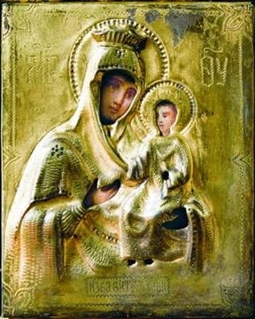

|
В 737 году после Р. X. арабский полководец Мурван ибн Мухаммед, прозванный за свою жестокость «Кру» (т.е. «глухой»), подвергнув страшному опустошению Картли (Восточную Грузию) и Эгриси (Западную Грузию), вторгся с войсками в Абхазию. Заняв Себастополис (Сухум), он подошел к Анакопии (Новому Афону), тогдашней столице Абхазии, и осадил Анакопийскую крепость.
«Никто не мог сражаться с Глухим, — сообщает летописец, — ибо его воинов больше, чем деревьев в эгрисских лесах...»
Но благодаря заступничеству Богородицы, чей, по словам летописца, нерукотворный, ниспосланный свыше, образ (икона) находился в крепости, и перед которым, преклонив колена, всю ночь молились цари и воины, пребывавшие в крепости, Господь послал на арабов «зной южный и заболели они кровяной холерой». «Когда же рассветало, — продолжает летописец, — из их (т.е. арабов) лагеря раздались голоса плача и рыдания. И тогда выступили они (абхазские войска, находившиеся в крепости), уповая на Бога, для сражения с ними; сразились, и Господь Бог дал победу малочисленному христианскому воинству; от холеры погибло тридцать пять тысяч, а от меча — три тысячи». Арабы после этого поспешно снялись и отступили от Анакопии и ушли из Абхазии.
После этого события чудотворный образ Анакопийской Богородицы стал почитаться не только в Абхазии, но и за ее пределами. К сожалению, сам подлинник Анакопийской Богоматери был утерян.
В церковном календаре Абхазской Православной Церкви день празднования Чудотворной иконы Анакопийской Богоматери совершается 13 октября по старому стилю, 26 октября по новому стилю.
Икона Божией Матери "Избавительница"

Чудотворный образ сер. XVII в. Первый известный держатель иконы иером. Константий (Феодул), подвизавшийся в сел. Вастуни (Пелопоннес), в 1822 г. передал ее в качестве благословения своему ученику, пришедшему на Афон. Тот стал насельником мон-ря вмч. Пантелеимона, получив в монашестве имя Макарий (с 1831 схим. Мартиниан; † 1884). Мон. Макарий постоянно носил образ на шее в жестяном футляре. Икона была прославлена чудесами. Так, в 1841 г. по молитве перед образом жители сел. Мавровуни (совр. ном Лакония, Греция), рядом с к-рым схим. Мартиниан пребывал ок. 2 лет, избавились от саранчи (Поселянин. С. 668-672). Приходившие к иконе страждущие прославляли не только икону, но и старца, тогда он нашел уединение в расселине прибрежной отвесной скалы.
В ночи ему был явлен простиравшийся от земли до неба световой столп, и глас Богородицы повелел еще послужить ближним. Утром следующего дня жители узнали от бесноватой Елены, где скрывался старец, и пришли к нему с мольбами о помощи. После неск. поклонов старца перед иконой исцелились Елена и др. страдавшие беснованием, в т. ч. Мария из сел. Скифьяника и Григорий из сел. Скутари.
20 июля 1889 г. по завещанию архим. Макария, настоятеля Пантелеимонова мон-ря, образ был передан в благословение Новоафонскому во имя ап. Симона Кананита муж. монастырю; 4 сент. настоятель этого мон-ря архим. Иерон вместе с иером. Иларионом передал образ еп. Сухумскому Александру, к-рый отслужил перед возложенной на аналой иконой молебен. После 1-го совершенного в обители празднества в честь иконы, установленного в память спасения имп. Александра III с семейством при крушении поезда близ ст. Борки (17 окт. 1888), штормовой волной на берег у монастыря вынесло много рыбы. Чудесные исцеления от иконы были засвидетельствованы в офиц. акте, подписанном представителями церковной власти и гос. чиновниками (19 мая 1891 был исцелен крестьянин Тульской губ. М. И. Медынцев, богомолец из Екатеринославской губ. мещанин К. Я. Соколовский, 20 мая - казак Калитвенской станицы С. В. Калинин); по молитвам перед иконой архим. Иерона обитель была спасена от пожара.
С 1924 г., когда мон-рь закрыли, «И.» и. хранилась у одного из монахов Новоафонского мон-ря, оставшегося жить в Абхазии. По окончании второй мировой войны он был определен приходским священником в открывшуюся в Гудауте ц. Покрова Пресв. Богородицы. Туда он принес чудотворную икону. До наст. времени в этом храме находится киот, сооруженный для «И.» и., очевидно, еще в дореволюционное время в Новоафонском мон-ре. В этом киоте хранится список чудотворного образа. По непроверенным сведениям, во 2-й пол. XX в. «И.» и. была вывезена на Украину в Почаевскую в честь Успения Пресв. Богородицы лавру.
Миниатюрная по размерам икона (ок. 14×13 см) написана на доске. На ней представлена Божия Матерь «Одигитрия» с благословляющим Младенцем Христом на левой руке. Богомладенец в левой руке держит опущенный вертикально свиток. «И.» и. была украшена ризой филигранной работы и вложена в медный позолоченный киот.
Созданный в XIX в. в мастерской Новоафонского мон-ря образ отражает историю «И.» и., к-рая связывала Старо- и Новоафонскую обители: на иконе, на фоне собора Новоафонского мон-ря, изображены ап. Симон Кананит и вмч. Пантелеимон, держащие образ Божией Матери «Избавительница». Такие иконы встречались чаще, чем «И.» как отдельный образ. Один из ранних списков, очевидно нач. XX в., хранится в соборе Новоафонского мон-ря. В советское время он находился в Майкопе и был возвращен монастырю в 90-х гг. XX в. Новописаная икона той же иконографии была передана в дар мон-рю вмч. Пантелеимона на Афоне Святейшим Патриархом Московским и всея Руси Алексием II, когда он посетил мон-рь в февр. 1998 г.; икона пребывает в соборе Покрова Пресв. Богородицы. В честь «И.» и. освящен один из храмов Новоафонского мон-ря.
Пицундская (Бичвинтская) икона Божией Матери
Икона вычеканена из позолоченного серебра. Написана в 1568 году по заказу святейшего католикоса Абхазской Православной Церкви Евдемона I, о чём сообщается в надписи на самой иконе. Несмотря на эту надпись, существует версия, что икона создана по приказу царя Баграта III и царицы Елены в конце X века и украшена дорогим серебряным киотом очень искусной работы.
Во второй половине XVI века, во время патриаршества католикоса Евдемона I, в результате усиления османской агрессии против Абхазского княжества, опустошения сёл и городов, а также феодальной междоусобицы, резиденция Абхазского католикоса была перенесена из Пицунды в Гелатский монастырь (Западная Грузия, Кутаис). Кафедрой стала церковь великомученика Георгия, где и находилась до конца кончины последнего Абхазского католикоса Максима II, умершего по дороге в Палестину I в 1795 году в Киево-Печерской лавре. Сюда же была перенесена одна из самых почитаемых абхазских православных святынь — Пицундская (Бичвинтская) икона Божией Матери. Второе название у иконы от древнего наименования Пицунды – Бичвинта.
Икона Знамения Божьей Матери
В 1855 году Российским Императором Александром II Лыхненскому храму была подарена икона Знамения Божьей Матери, надпись на которой гласит на абхазском языке «Пресвятая Богородица спаси нас».
Икона целителя Пантелеимона
В монастырь святого апостола Симона Кананита, расположенный в абхазском городе Новый Афон, почти век спустя вернулась уникальная православная реликвия - храмовая икона целителя Пантелеимона. В торжественной церемонии участвовали президент Абхазии Сергей Багапш, председатель Госдумы России Борис Грызлов.
Икона была написана ко дню коронации Николая Второго на святой горе Афон в Греции в 1896 году, а затем подарена Новоафонской обители. В Советское время монастырь разграбили, пропала и икона. Найти ее удалось лишь год назад.
По одной из версий, образ пытались распилить на части и вывезти за границу. В Ростове-на-Дону реликвию отреставрировали. По оценке одного из инициаторов возвращение иконы - депутата Госдумы Ивана Саввиди, это пример сохранения духовного наследия православных народов.
В честь возвращения святыни в Новоафонском монастыре отслужили благодарственный молебен. Сюда пришли прихожане, которые давно ждали этого дня. Люди благодарили Ивана Саввиди за то, что Афон вновь обрел утерянную святыню.
Образ установлен в центре собора. Сотни верующих выстроились в очереди, чтобы поклониться иконе и попросить исцеления. На житийской иконе Святого Пантелеймона отражены основные, наиболее значимые вехи в жизни великомученика.
По словам управляющего Сухумо-Абхазской Епархии Виссариона (Аплиа), в разные периоды новой и новейшей истории Абхазии христианские святыни вывозились на хранение в Грузию, но так и не были возвращены в монастыри Абхазии. Сейчас Абхазская церковь нуждается в своих утраченных святынях, поскольку сегодня в республике идет процесс возрождения православных храмов, монастырей.
В их числе - веретено Пресвятой Богородицы из Моквского храма, мощи архидьякона Первомученика Стефана (о нем написано в Евангелии), Икона Моквской Божьей матери X века (эпохи царя Леона III), Пицундская Икона Божьей матери (Х век), Бедийская (золотая) чаша царя Абхазии Баграта III, мозаика Пицундского храма с древнехристианской символикой IV века. Каманская Плащаница с изображением Иоанна Златоуста, вышитая византийскими монахинями, была похищена уже после грузино-абхазской войны.
В Абхазии надеются, что когда-нибудь утерянные святыни вновь возвратятся в свои обители.
Икона святого Георгия Победоносца
Новописанная икона святого Георгия замироточила в Храме села Илори Очамчирского района.
Древний Храм посвящен святому Георгию.
Святой Георгий
Копия писанная по аналогу Иконы Успенского Храма Московского Кремля.
Иконописец О.Спиридонова.
Образ замироточил в алтаре Илорского Храма
Святой мученик Уар
Новописанная икона св.м-ка Уара мироточит в Храме Святителя Николая Чудотворца.
В селе Кутол Очамчирского района Абхазии
Святой Мученик Абхазской Церкви
Евстафий Апсильский (он же Апсилийский, Апсилский)
Святой Мученик Харранский. Оcобо почитаемый в Абхазии
Просветитель Абхазии
Святой Апостол Симон Кананит (Зилот)
|